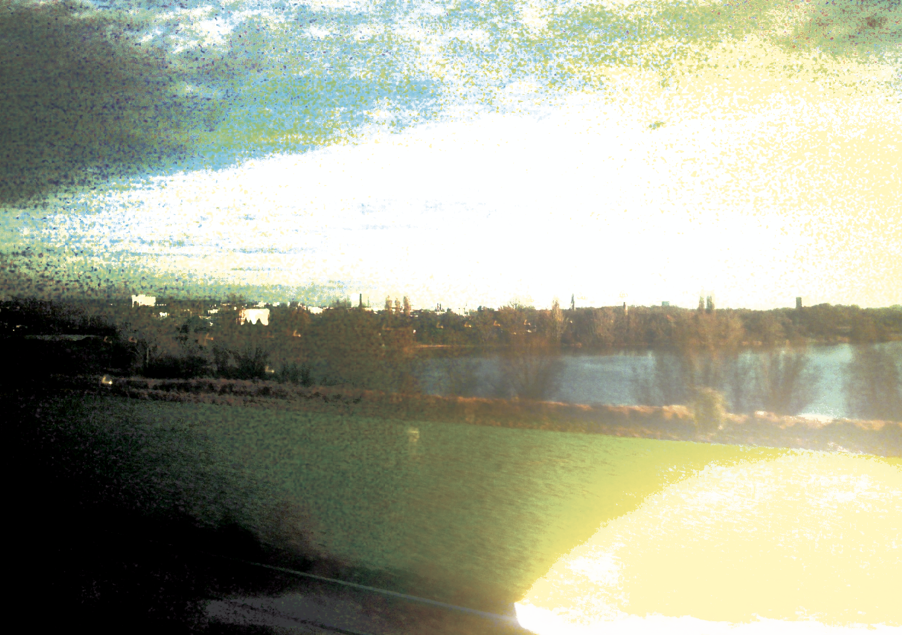
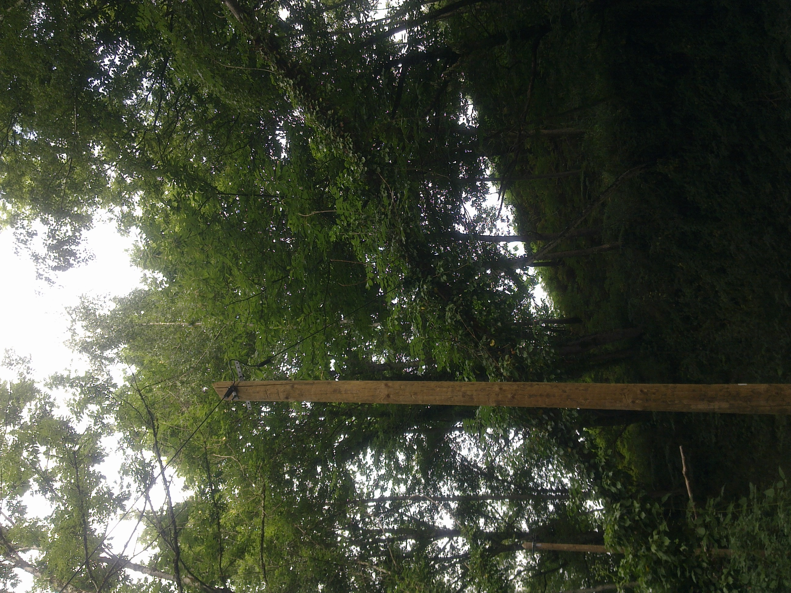
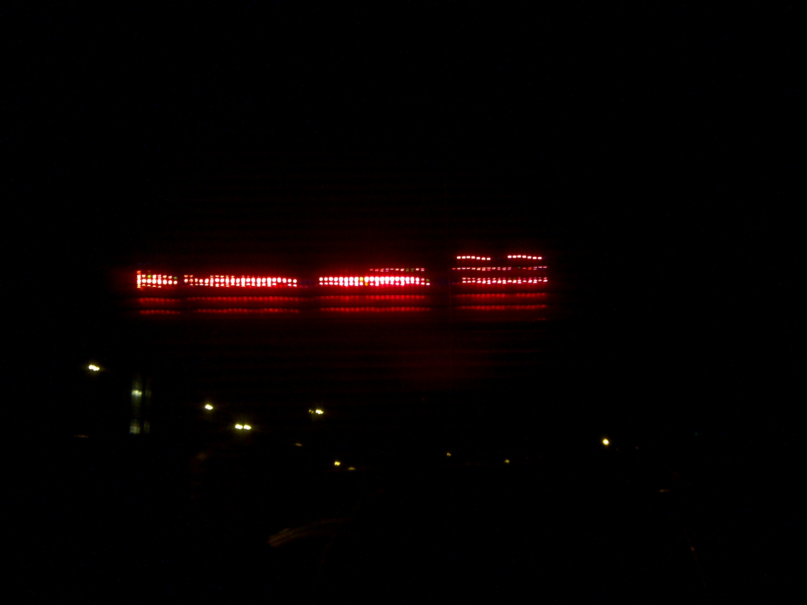
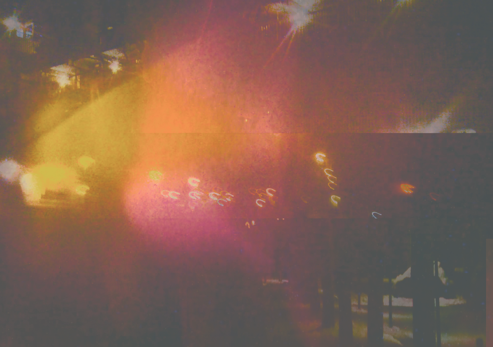

onder de maan
leerde ik je kennen
en onder de sterren
liet ik je gaan
als ik het ondenkbare doe
en je laat gaan
nee zeg dan niet dat
je van me houdt
zeg dan niet dat
je nog van me houdt
ik gaf je de sterren
jij me de maan
was ik het waard
alle tranen
zou je het nog eens doen
ik liet je gaan
Het lied is geschreven eind september, en zat al die tijd in me gepropt. Het eruit laten was een verademing,

heb ik eindelijk een plank vrij
zonder twijfelen stopte ik jouw spullen in een tas
en begon ik ijverig met het vullen van die lege plank
Het werd een stapel oude kleding
en wat boeken met jouw naam erop
die ik van uitpuilende lades verzamelde
en haastig op die lege plank legde
ik kijk ernaar en ik vraag me af
wat je met mijn plank spullen hebt gedaan
zijn ze al in een tas geprotp
of klamp je je eraan vast
en ruik je er stiekem aan
dan kijk ik naar die tas met jouw plank spullen
die ik toen aarzelend in een hoek legde
en besef ik me
dat ik die daar voorlopig nog liever even laat liggen




en lief, ben je er al?
in de wolken
in de wolken
en waar, droom je van?
ja lief, waar droom je van?
van ons, aan het water
van ons, aan het water
dus slaap zacht mijn lief
en vlieg rustig door de wolken
dus slaap zacht mijn lief
en tel alle schaapjes voor me
ja tel alle schaapjes voor me
en lief, slaap je wel?
of kom je om van verdriet?
dat ik je heb aangedaan
en lief, ben je ook alleen?
en lief, droom je ook alleen?
of zijn we samen, in de wolken
in de wolken, zijn we samen
zijn we samen,
dus slaap zacht mijn lief
en vlieg rustig door de wolken
dus slaap zacht mijn lief
en vlieg rustig door de wolken
ik hoop dat de wolken lief zijn
ik hoop dat de wolken lief zijn
ja slaap zacht mijn lief
ik hoop dat je weet dat je bij me bent
ik hoop dat je weet dat je bij me bent
ik hoop dat je weet dat je bij me bent
ik hoop dat je weet dat je bij me bent
ik hoop dat je weet dat je bij me bent